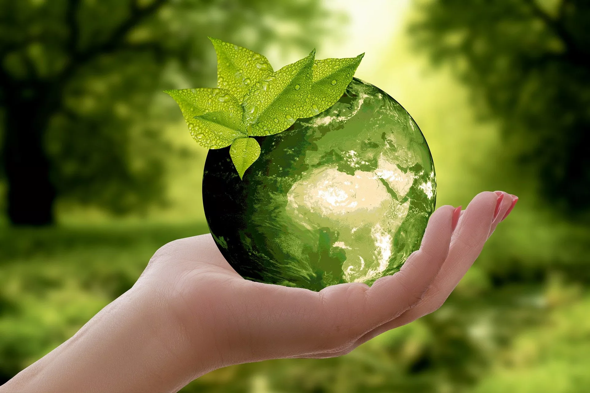

Desenvolvimento do Aplicativo "Conciência Ambiental" para Educação Ambiental
O "Conciência Ambiental" é um aplicativo móvel desenvolvido para democratizar o acesso à educação ambiental,
promovendo conscientização sobre sustentabilidade, mudanças climáticas, conservação da biodiversidade e
práticas eco-friendly. Seu objetivo é engajar usuários de forma interativa, transformando conhecimento
teórico em ações concretas no dia a dia.

Público-Alvo
Estudantes(ensino fundamental a superior) e educadores (como
ferramenta pedagógica).
Público geralinteressado em adotar hábitos sustentáveis.
Comunidadese organizações que buscam disseminar práticas ambientais.
Principais Funcionalidades
1. Conteúdo Educativo Modular
Módulos temáticos (ex: reciclagem, energia renovável, desmatamento) com vídeos, infográficos e textos
curtos.
Dados atualizados sobre políticas ambientais globais e locais.
2. Gamificação e Missões
Desafios diários (ex: reduzir consumo de água, plantar uma árvore).
Sistema de recompensas (badges, rankings) e compartilhamento em redes sociais.
3. Ferramentas Interativas
Calculadora de Pegada de Carbono:Permite ao usuário medir seu impacto ambiental e
receber dicas personalizadas.
Realidade Aumentada (RA):Simula efeitos de ações ambientais (ex: visualizar uma
floresta antes/depois do desmatamento).
4. Comunidade e Engajamento
Fóruns para debates e compartilhamento de experiências.
Mapas colaborativos de pontos de reciclagem, hortas comunitárias e eventos ambientais.
5. Acessibilidade
Design inclusivo (modo escuro, leitor de tela).
Disponibilidade offline para regiões com conexão limitada.
Tecnologias Utilizadas
Front-end: React Native (para compatibilidade com iOS e Android).
back-end:Firebase (armazenamento de dados, autenticação)
Realidade Aumentada:ARCore (Android) e ARKit (iOS).
analytics:Google Analytics e ferramentas de feedback in-app para monitorar engajamento.
Processo de Desenvolvimento
1. Pesquisa e Validação
Parcerias com ONGs ambientais (ex: WWF, Greenpeace) e especialistas para garantir precisão científica.
Pesquisas com potenciais usuários para definir prioridades.
2. Design Centrado no Usuário (UI/UX)
Protótipos testados em escolas e comunidades para ajustar usabilidade.
Interface intuitiva, com ícones ilustrativos e linguagem simples.
3. Desenvolvimento Ágil
Sprints focadas em funcionalidades-chave (ex: gamificação primeiro).
Testes beta contínuos com grupos focais.
4. Lançamento e Divulgação
Parcerias com secretarias de educação para inclusão em currículos escolares.
Campanhas em redes sociais com influenciadores ambientais.
Desafios Enfrentados
Conteúdo Dinâmico: Manter informações atualizadas exigiu integração com APIs de fontes
confiáveis (ex: dados da ONU).
Performance da RA:Otimização para dispositivos menos potentes.
Engajamento Contínuo:Uso de notificações personalizadas e atualizações sazonais (ex:
desafios relacionados ao Dia da Terra).
Impacto Esperado
Métricas:Atingir 100 mil downloads no primeiro ano, com taxa de retenção de 40%.
Educacional:Certificados digitais para usuários que completarem módulos, válidos em
programas de extensão universitária
Ambiental:Relatórios mensais mostrando redução coletiva de pegada de carbono (ex:
"Usuários economizaram X litros de água este mês").
Próximos Passos
Expansão para VR:Simulações imersivas de ecossistemas.
Integração com IoT:Conectar a sensores de qualidade do ar ou lixeiras inteligentes.
Versão para Empresas:Ajudar empresas a calcular impactos e treinar funcionários em ESG.
O "Conciência Ambiental" busca ser mais que um app: uma plataforma colaborativa que transforma educação
ambiental em ação prática, conectando indivíduos, escolas e organizações em prol de um futuro sustentável.
🌱📱